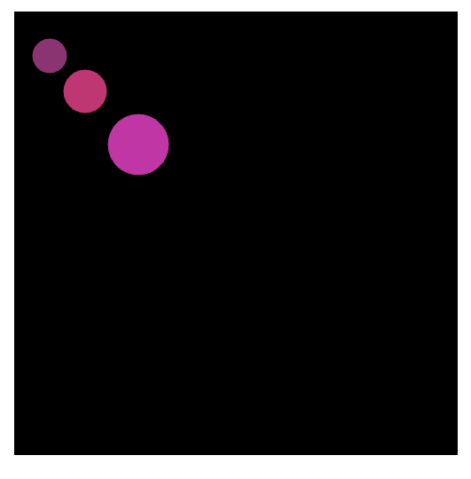
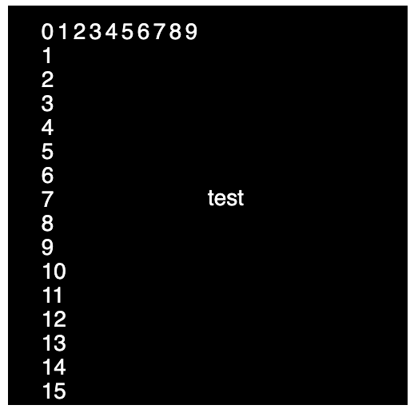

Please work on questions 1-7 below. The tasks are ordered by difficulty... They become more complex as the numbers increase.
They are REVIEW questions from things learnt in CART 253. So, you should be able to complete them all without learning/looking up new stuff :)
You may seek help from your peers, the professor, the TA ... and the internet. However - please do not use Chat GPT or any other AI Assistant.
These tasks ARE NOT A TEST. It is not a competition - and you are not competing for first/second/nth place. The goal is for you to practice constructs (ie. variables, if/then, while, for ...) in p5.js in class.
The prof will stop the session after about 1.5 hours and we will all hopefully all together go over possible solutions
Participation in this session is necessary and you are obligated to stay even if you are a seasoned programmer... help your peers :)
Each team member must upload the solutions to their github repo and submit the relevent link on moodle.
Everyone in the same group works on the same project/code ... you need to collaborate...
All code is to be written in javascript /p5.js. Do not use any other libraries/frameworks API's, languages etc...
Remember: there may be more than one solution for a given task ... so do not worry if someone else has a different solution. Implement one solution per task...
QU 1:
Create three ellipses
Each ellipse must have a different color, size and position
Only use variables for the x, y, width, height and color (r,g,b) for each ellipse.
REUSE THE SAME variables for each ellipse
DO NOT USE: objects, arrays, loops, animation, custom self created functions or the random function

QU 2:
REDO Task 1 but create and use a custom function with the following signature:
function drawEllipse(x,y,w,h,r,g,b){ //body}
Then: in the setup() make three calls to drawEllipse(...)
QU 3:
Create three rectangles (or squares)
The color, size, initial positions of the three rectangles do not matter: but USE VARS/CONSTS whenever possible
Then: update the position of the 1st rectangle whenever the mouse is clicked on the canvas
And: update the position of the 2nd rectangle when spacebar is pressed
Finally: update the position of the 3rd rectangle in the draw() (each frame). Only change the y position in one direction. Also: handle the bottom canvas bounds: if the rectangle is at the bottom, set it to the top of the canvas
BONUS: every time the mouse moves on the canvas change the color of the 3rd rectangle with a new random color
For ALL parts: DO NOT USE OBJECTS or ARRAYS
You can use IF STATEMENTS
QU 4:
AGAIN USE VARIABLES/CONSTS WHENEVER POSSIBLE
Create three rectangles: each one is the height of the canvas and 1/3 of the width of the canvas
Position the first rectangle in the first third, the second in the second third and the third at the end of the canvas (three columns)
Each rectangle should be a different blue color
Then, IF/WHEN the mouse is over the 1st rectangle change the colour of the first rectangle to white
Apply the same mouse behaviour to the other two rectangles
Also: Implement the following; when/if the mouse is NOT over a given rectangle make sure that those rectangles go back to their original color
For ALL parts: DO NOT USE ARRAYS
You may use OBJECTS - but only for the color of the rectangles
QU 5:
USE VARIABLES/CONSTS WHENEVER POSSIBLE
FOR THIS EXERCISE DO NOT USE A FOR LOOP - ONLY WHILE LOOP(S)
Create a variable that will hold a number i.e. counter, set its value to 0
Create an orange square (width, size and position do not matter)
Use an object to hold the square's properties (w,h,x and y and color)
Create a function called displaySquare() and in the body of the function implement the code to render the orange square. Call this function in the draw()
Whenever the mouse is clicked inside the orange square increment the counter variable by 1
Whenever the mouse is over the orange square: highlight the square to be lighter orange
Create a helper function to check if the mouse is inside the square (i.e. checkCollisionWithSquare()), and have it return true if it is and false otherwise. USE this function for the mouse click/over functionalities.
Create an ellipse and draw it with its center at the center of the screen
make a variable called radius to hold the size of the ellipse
Set the color of the ellipse to be white
Create a variable called ellipseAlpha to hold the alpha value of the ellipse.
Practise showing the ellipse at different sizes - change the radius (always with the same x and y)
USE A SINGLE WHILE LOOP in the draw() to draw the same number of ellipse as that of the counter (if the counter is 1 - 1 ellipse, if the counter is 2: 2 ellipse etc...)
Also in the while loop: each new circle should be slightly larger and make the alpha value larger (start the alpha small)
Do not draw anything if the counter is greater than 10 or less than 1
BONUS: make the logic for drawing a single circle into a custom function (i.e. drawCircle(x,y,radius,alpha))
BONUS II : make another square (red) that when clicked will decrement the counter by 1 ... AND - when hovered over will be lighter red ... (make custom functions and objects as required)
BONUS III: INSTEAD OF USING A WHILE LOOP FOR THE ELLIPSE(S) - USE A FOR LOOP...
QU 6:
AGAIN USE VARIABLES/CONSTS WHENEVER POSSIBLE
Make a text object to hold the string "test" , fill white , textSize 28 , center of screen
Write a for loop to repeat 10 times: start at 0 and finish at 9
In the for loop body: output the counter variable (usually labelled i) as text. As well, use the counter variable to offset the x position of the text (i.e. if i ==1 then x position ==20, if i ==2 x position ==40 etc..)
Make another for loop to repeat 15 times: start at 15 end at 1
In this loop: output the counter variable as text . As well, use the counter variable to offset the y position of the text (i.e. if i ==1 then y position ==20, if i ==2 y position ==40 etc..)
BONUS: USING THE SAME FOR LOOP AS JUST BEFORE: can you make the the greatest number start at the top and the smallest output at the bottom?

QU 7:
Use a nested for loop to draw a grid of evenly spaced circles .
Make the grid work for a circle size that is a multiple of 5 (up to 100) - just by changing one variable.
Make ALL circles the SAME random color - only switches on page reload
Have this random color CHANGE for ALL CIRCLES when the user presses on space bar